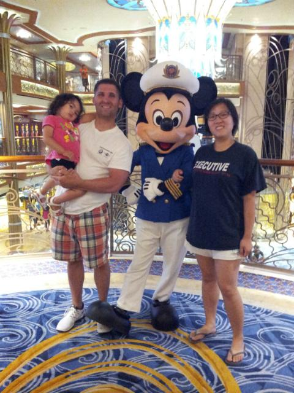
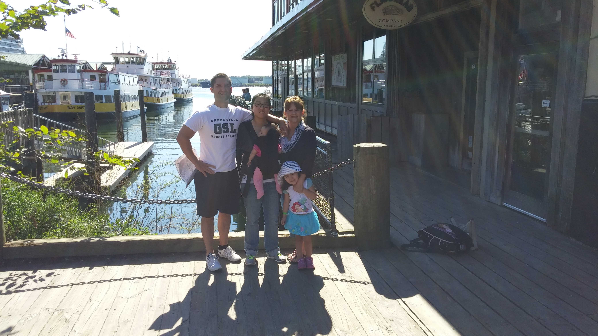
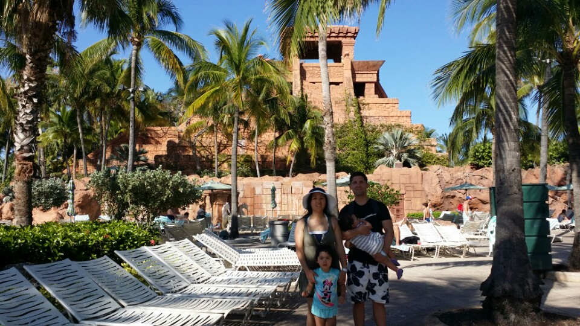
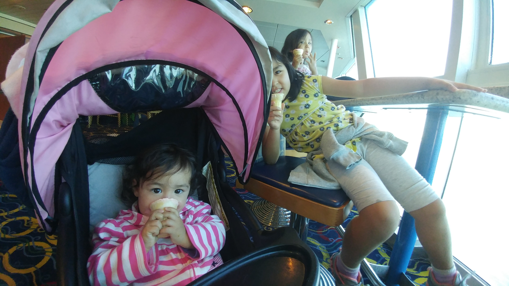

Here is a short overview of all the cruises that our expanding family has been on. As you can probably tell, we enjoy our cruises. Let's begin!
Disney® Bahamas 2014
This was our first cruise. We booked a Disney cruise through Costco, because we heard good things about Disney and thought our daughter would like the characters(she didn't). I was also pregnant with our second child at the time so no drinking for me. It was a lot of fun. They had plenty of activies, the food was good, and our 3 year old loved the childcare. This was the beginning of our yearly cruise tradition.
Carnival Canada and New England 2015
For our second cruise, we went with Carnival because we wanted to try out all the different cruise companies and also Disney is extremely expensive in comparison. This time we went with 2 children and my mother in law. This cruise went to two ports in Canada, as well as Boston and Portland(Maine not Oregon). This was probably my favorite cruise. The ports in Portland and Canada were beautiful with lots to see and do. I picked a lobster restaurant in Portland. The worst food you could ever find. They also dropped someone's lobster right before serving and they picked it up and took it to the back. I'm sure it went right back as is. I wish I could remember the name of the restaurant so I could do a PSA not to go there.
Royal Caribbean Bahamas 2016
This trip to the Bahamas we went with my mom. We went to Atlantis in the Bahamas. The waterpark was a lot of fun. It was a bit sketchy getting a ride to the waterpark from the port. Atlantis has a really cool waterslide where you go down a tube that goes through an aquarium with sharks. I really enjoyed the aquariums because I love aquariums.
Norwegian Bahamas 2017
I'll be honest. Some of(all) of my Bahamas cruises kind of blend together in my brain and I couldn't find a picture for this one so just imagine the other Bahamas ones and it will be close enough.
Royal Caribbean Western Carribean 2019
This was our last cruise before "that which must not be named." It was the only cruise with all our kids. The kids had a lot of fun, mostly eating ice cream. And that concludes our cruise adventure. I hope one day we will be able to go again. In terms of value and convenience, I think cruises are a great option, especially for families with young children.
